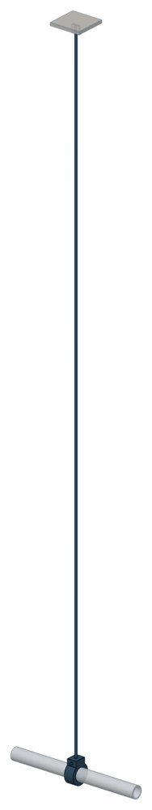

Опоры жесткие подвесные Т22
Серия 4.903-10 вып. 6. Dн 32–76 мм, вертикальная нагрузка — до 1,47 кН, масса 1–1,85 кг.

- Диаметр трубы Dн
- 32–76 мм
- Документ
- Серия 4.903-10 вып. 6
- Исполнений
- 35
- Вертикальная нагрузка
- до 150 кгс
- Масса
- 1–1,85 кг
- 3D-модели
- у всех исполнений (условные: общий вид по габаритам)
Таблица исполнений Т22
| Обозначение | Код ПРОМБУРГ | Dнмм | Вертикальная нагрузкакгс | Высота Нмм | Диаметр тяги dмм | Массакг | 3D |
|---|---|---|---|---|---|---|---|
| Т22.01 | ПБ-Т22-0032-1 | 32 | 100 | 1110 | 8 | 1 | 3D |
| Т22.02 | ПБ-Т22-0032-2 | 32 | 100 | 1360 | 8 | 1,1 | 3D |
| Т22.03 | ПБ-Т22-0032-3 | 32 | 100 | 1660 | 8 | 1,23 | 3D |
| Т22.04 | ПБ-Т22-0032-4 | 32 | 100 | 1860 | 8 | 1,3 | 3D |
| Т22.05 | ПБ-Т22-0032-5 | 32 | 100 | 2110 | 8 | 1,39 | 3D |
| Т22.06 | ПБ-Т22-0032-6 | 32 | 100 | 2360 | 8 | 1,49 | 3D |
| Т22.07 | ПБ-Т22-0032-7 | 32 | 100 | 2610 | 8 | 1,59 | 3D |
| Т22.08 | ПБ-Т22-0038-1 | 38 | 100 | 1110 | 8 | 1,01 | 3D |
| Т22.09 | ПБ-Т22-0038-2 | 38 | 100 | 1360 | 8 | 1,11 | 3D |
| Т22.10 | ПБ-Т22-0038-3 | 38 | 100 | 1610 | 8 | 1,25 | 3D |
| Т22.11 | ПБ-Т22-0038-4 | 38 | 100 | 1860 | 8 | 1,31 | 3D |
| Т22.12 | ПБ-Т22-0038-5 | 38 | 100 | 2110 | 8 | 1,41 | 3D |
| Т22.13 | ПБ-Т22-0038-6 | 38 | 100 | 2360 | 8 | 1,5 | 3D |
| Т22.14 | ПБ-Т22-0038-7 | 38 | 100 | 2610 | 8 | 1,6 | 3D |
| Т22.15 | ПБ-Т22-0045-1 | 45 | 150 | 1115 | 8 | 1,03 | 3D |
| Т22.16 | ПБ-Т22-0045-2 | 45 | 150 | 1365 | 8 | 1,13 | 3D |
| Т22.17 | ПБ-Т22-0045-3 | 45 | 150 | 1670 | 8 | 1,25 | 3D |
| Т22.18 | ПБ-Т22-0045-4 | 45 | 150 | 1870 | 8 | 1,32 | 3D |
| Т22.19 | ПБ-Т22-0045-5 | 45 | 150 | 2120 | 8 | 1,42 | 3D |
| Т22.20 | ПБ-Т22-0045-6 | 45 | 150 | 2870 | 8 | 1,52 | 3D |
| Т22.21 | ПБ-Т22-0045-7 | 45 | 150 | 2615 | 8 | 1,62 | 3D |
| Т22.22 | ПБ-Т22-0057-1 | 57 | 150 | 1120 | 8 | 1,05 | 3D |
| Т22.23 | ПБ-Т22-0057-2 | 57 | 150 | 1370 | 8 | 1,15 | 3D |
| Т22.24 | ПБ-Т22-0057-3 | 57 | 150 | 1670 | 8 | 1,27 | 3D |
| Т22.25 | ПБ-Т22-0057-4 | 57 | 150 | 1870 | 8 | 1,85 | 3D |
| Т22.26 | ПБ-Т22-0057-5 | 57 | 150 | 2120 | 8 | 1,44 | 3D |
| Т22.27 | ПБ-Т22-0057-6 | 57 | 150 | 2370 | 8 | 1,54 | 3D |
| Т22.28 | ПБ-Т22-0057-7 | 57 | 150 | 2620 | 8 | 1,65 | 3D |
| Т22.29 | ПБ-Т22-0076-1 | 76 | 150 | 1130 | 8 | 1,09 | 3D |
| Т22.30 | ПБ-Т22-0076-2 | 76 | 150 | 1380 | 8 | 1,19 | 3D |
| Т22.31 | ПБ-Т22-0076-3 | 76 | 150 | 1680 | 8 | 1,31 | 3D |
| Т22.32 | ПБ-Т22-0076-4 | 76 | 150 | 1880 | 8 | 1,39 | 3D |
| Т22.33 | ПБ-Т22-0076-5 | 76 | 150 | 2130 | 8 | 1,49 | 3D |
| Т22.34 | ПБ-Т22-0076-6 | 76 | 150 | 2380 | 8 | 1,59 | 3D |
| Т22.35 | ПБ-Т22-0076-7 | 76 | 150 | 2630 | 8 | 1,68 | 3D |
Чтобы заказать, сообщите обозначение и код ПРОМБУРГ: +7 (499) 325-51-35, promburg@yandex.ru.
Нормативные документы
- Серия 4.903-10 вып. 6 Изделия и детали трубопроводов для тепловых сетей. Выпуск 6. Опоры трубопроводов подвесные (жесткие и пружинные) — документ, по которому изготавливается изделие — Не действует с 01.01.1997. Заменён: Серия 5.903-13 вып. 6-95. Изделие изготавливается по прежнему обозначению.
Связанные позиции
- Соседний тип: Т23 — Опоры жесткие подвесные
На трубу Dн 32–76 мм в каталоге
Позиции каталога с исполнениями на те же наружные диаметры трубы.
Детали трубопровода
- Заглушка стальная эллиптическая общих Dн: 5
- Отвод стальной крутоизогнутый 90° общих Dн: 5
- Фланец стальной воротниковый общих Dн: 5
- Фланец стальной плоский приварной общих Dн: 5
- Отвод стальной крутоизогнутый 90°, 09Г2С общих Dн: 2
- Переход стальной концентрический общих Dн: 2
Компенсаторы
- Компенсатор резиновый фланцевый NBR РКН общих Dн: 4
- Компенсатор резиновый фланцевый SBR РКС общих Dн: 4
- Компенсатор резиновый фланцевый PTFE РКТ общих Dн: 4
- Компенсатор резиновый фланцевый EPDM РКЭ общих Dн: 4
- Компенсатор сильфонный 2ОПКР общих Dн: 2
- Компенсатор сильфонный 2ОПКР (ИЯНШ) 2ОПКРИ общих Dн: 2
- Компенсатор сильфонный 2СКУ.М 2СКУМ общих Dн: 2
- Компенсатор сильфонный 2СКУ.М (ИЯНШ) 2СКУМИ общих Dн: 2
- Компенсатор сильфонный 2СКУ.ППМ 2СКУППМ общих Dн: 2
- Компенсатор сильфонный 2СКУ.ППМ (ИЯНШ) 2СКУППМИ общих Dн: 2
- Компенсатор сильфонный 2СКУ.ППУ 2СКУППУ общих Dн: 2
- Компенсатор сильфонный 2СКУ.ППУ (ИЯНШ) 2СКУППУИ общих Dн: 2
- Компенсатор сильфонный 2СКУ.ППУ/ОЦ (ИЯНШ) 2СКУППУОЦИ общих Dн: 2
- Компенсатор сильфонный DEK общих Dн: 2
И ещё 21 тип — в оглавлении каталога.
Другие опоры и подвески
- Опора неподвижная хомутовая ТС-659 общих Dн: 5
- Опора неподвижная двухупорная ТС-660 общих Dн: 5
- Опора скользящая приварная ТС-623 общих Dн: 5
- Опора скользящая с плоским хомутом ТС-625 общих Dн: 5
- Опоры неподвижные ППУ-ОЦ (ПЭ) ППУ неподвижная общих Dн: 5
- Опоры скользящие ППУ-ПЭ(ОЦ) ППУ скользящая общих Dн: 5
- Опоры бескорпусные неподвижные ОБН общих Dн: 5
- Подвески ПГ и ПМ для горизонтальных трубопроводов ПГ, ПМ общих Dн: 5
- Крепление газопровода УКГ 15.00 общих Dн: 5
- Опорные плиты диэлектрические ТС-632 общих Dн: 3
И ещё 46 типов — в оглавлении каталога.
Другие типы раздела
Подвески жёсткие (Т22…Т25, ГОСТ 16127)
- Подвесные опоры ПГ2у, ПМ2у
- Подвесные опоры, подвески ПМ2ш, ПГ2ш ПГ2ш, ПМ2ш
- Подвески ПГ и ПМ для горизонтальных трубопроводов ПГ, ПМ
- Опоры подвесного типа ПГВ, ПМВ
- Опоры жесткие подвесные Т23
- Опоры жесткие подвесные Т24
- Опоры жесткие подвесные Т25
Частые вопросы
По какому диаметру подбирать — Dн или Ду?
По наружному диаметру трубы Dн: именно он стоит в таблицах серии. Ду — условный проход, округлённая величина: Ду 100 соответствует Dн 108. В заявке указывайте Dн и толщину стенки трубы.
В старом проекте нагрузка в тс, а здесь в кН. Как сравнить?
Серия 4.903-10 даёт нагрузки в тонна-силах, серия 5.903-13 — в килоньютонах. 1 тс = 9,81 кН, то есть 10 тс — это около 98 кН. В таблицах каталога переключатель единиц пересчитывает значения.
Из какой стали изготавливаются опоры?
По рабочим чертежам серии листовые детали — Ст3сп5 ГОСТ 14637-89, хомуты из круга — сталь 20 ГОСТ 1050-88. Для районов с низкой расчётной температурой воздуха применяется низколегированная сталь, в том числе 09Г2С; размеры опор при этом не меняются. В заявке укажите расчётную температуру наружного воздуха.
Почему часть поверхностей опоры не окрашена?
Поверхности под приварку к трубе и к несущей конструкции оставляют без краски, иначе шов получится некачественным. Их консервируют смазкой, которую снимают перед сваркой.
Что указать в заявке, чтобы получить цену без уточнений?
Обозначение с номером исполнения или код ПБ, количество, Dн и стенку трубы, расчётную температуру наружного воздуха, покрытие, город доставки и желаемый срок. Кнопка «В заявку» в таблице собирает спецификацию, которую можно выгрузить в Excel или отправить письмом.